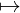
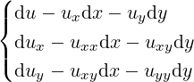

}
}| Up | Next | Prev | PrevTail | Tail |
EDS is a REDUCE package for symbolic analysis of partial differential equations using the geometrical approach of exterior differential systems. The package implements much of exterior differential systems theory, including prolongation and involution analysis, and has been optimised for large, non-linear problems.
EDS is a REDUCE package for symbolic analysis of partial differential equations using the geometrical approach of exterior differential systems. The package implements much of exterior differential systems theory, including prolongation and involution analysis, and has been optimised for large, non-linear problems.
Exterior differential systems give a geometrical framework for partial differential equations and more general differential geometric problems. The geometrical formulation has several advantages stemming from its coordinate-independence, including superior treatment of nonlinear and global problems. There is not sufficient space in this manual for an introduction to exterior differential systems beyond the scant details given in section 20.18.2, but there are a number of up-to-date texts on the subject (eg [BCG+91, Spi79]).
EDS provides a number of tools for setting up and manipulating exterior differential systems and implements many features of the theory. Its main strengths are the ability to use anholonomic or moving frames and the care taken with nonlinear problems.
There has long been interest in implementing the theory of exterior differential systems in a computer algebra system (eg [ASY74, GMM+81, HT91]). The EDS package owes much to these earlier efforts, and also to related packages for PDE analysis (eg [MF93, Rei91, Sei95]), as well as to earlier versions of EDS produced at Lancaster university with R. W. Tucker and P. A. Tuckey. Finally, EDS uses the exterior calculus package EXCALC of E. Schrüfer 20.20 and the exterior ideals package XIDEAL 20.64. XIDEAL and EXCALC are loaded automatically with EDS.
This work has been supported by the Graduate College on Scientific Computing, University of Cologne and GMD St Augustin, funded by the DFG (Deutsche Forschungsgemeinschaft). I would like to express my thanks to R. W. Tucker, E. Schrüfer, P. A. Tuckey, F. W. Hehl and R. B. Gardner for helpful and encouraging discussions.
This section presents the various structures used for expressing exterior systems quantities in EDS. In addition, some the concepts used in EDS to aid computation are described.
Within the context of EDS, a coframing means a real finite-dimensional differentiable manifold with a given global cobasis. The information about a coframing required by EDS is kept in a ⟨coframing⟩ object. The cobasis is the identifying element of an EDS ⟨coframing⟩: distinct cobases for the same differentiable manifold are treated as distinct ⟨coframing⟩ objects in EDS. The cobasis may be either holonomic or anholonomic, allowing some manifolds with non-trivial topology (eg. group manifolds) to be treated.
In addition to the cobasis, an EDS ⟨coframing⟩ can be given coordinates, structure equations and restrictions. The coordinates may be an incomplete or overcomplete set. The structure equations express the exterior derivative of the coordinates and cobasis elements as needed. All coordinate differentials must be expressed in terms of the given cobasis, but not all cobasis differentials need be known. The restrictions are a set of inequalities (at present using just ≠) describing point sets not in the manifold.
The ⟨coframing⟩ object is, of course, by no means a full description of a differentiable manifold. For example, there is no topology and there are no charts. However, the ⟨coframing⟩ object carries sufficient information about the underlying manifold to allow a range of exterior systems calculations to be carried out. As such, it is convenient to accept an abuse of language and think of the ⟨coframing⟩ object as a manifold.
A ⟨coframing⟩ is constructed or selected using the coframing operator.
A simple ⟨EDS⟩, or exterior differential system, is a triple (S,Ω,M), where M is a ⟨coframing⟩ (section 20.18.2), S is a ⟨system⟩ (section 20.18.3) on M, and Ω is an independence condition: either a decomposable ⟨p-form⟩ or a ⟨system⟩ of 1-forms on M (exterior differential systems without independence condition are not treated by EDS).
More generally, an ⟨EDS⟩ is a list of simple ⟨EDS⟩ objects where the various coframings are all disjoint. This last requirement in not enforced within EDS unless the edsdisjoint switch is on (section 20.18.12). These more general ⟨EDS⟩ objects are represented as a list of simple ⟨EDS⟩ objects. All operators which take an ⟨EDS⟩ argument accept both simple and compound types.
The trivial ⟨EDS⟩, describing an inconsistent problem with no solutions, is defined to be ({1},{},{}).
An ⟨EDS⟩ is represented by the eds operator (section 20.18.4), and can additionally be generated using the contact and pde2eds operators (sections 20.18.4, 20.18.4).
The solutions of (S,Ω,M) are integral manifolds, or immersions (cf section 20.18.3) on which S vanishes and the rank of Ω is preserved. Solutions at a single point are described by integral elements (section 20.18.3).
In EDS, the label ⟨system⟩ refers to a list
}of differential forms. This is distinct from an ⟨EDS⟩ (section 20.18.3), which has additional structure. However, many EDS operators will accept either an ⟨EDS⟩ or a ⟨system⟩ as arguments. In the latter case, any extra information which is required is taken from the background coframing (section 20.18.3).
The ⟨system⟩ of an ⟨EDS⟩ can be obtained with the system operator (section 20.18.5).
The information encapsulated in a coframing operator is usually inactive. However, when operations are performed on a ⟨coframing⟩ or an ⟨EDS⟩ object (sections 20.18.2, 20.18.3), this information is activated for the duration of those operations. It is possible to activate the rules and orderings of a coframing operator globally, by making it the background coframing. All subsequent EXCALC operations will be governed by those rules. Operations on ⟨EDS⟩ objects are unaffected, since their coframings are still activated locally. The background coframing can be set and changed with the set_coframing command, and inspected using coframing.
An integral element of an exterior system (S,Ω,M) is a subspace P ⊂ TpM of the tangent space at some point p ∈ M such that all forms in S vanish when evaluated on vectors from P . In addition, no non-zero vector in P may annul every form in Ω.
Alternatively, an integral element P ⊂ TpM can be represented by its annihilator P⊥ ⊂ Tp∗M, comprising those 1-forms at p which annul every vector in P . This can also be understood as a maximal set of 1-forms at p such that S ≃ 0 (mod P⊥) and the rank of Ω is preserved modulo P⊥. This is the representation used by EDS. Further, the reference to the point p is omitted, so an ⟨integral element⟩ in EDS is a distribution of 1-forms on M, specified as a ⟨system⟩ of 1-forms.
In specifying an integral element for a particular ⟨EDS⟩, it is possible to omit the Pfaffian component of the ⟨EDS⟩, since these 1-forms must be part of any integral element.
For large problems, it can require a great deal of computation to establish whether, for example, a system is closed or not. In order to save recomputing such properties, an ⟨EDS⟩ object carries a list of ⟨properties⟩ of the form
 }
}where ⟨keyword⟩ is one of the following: closed, quasilinear, pfaffian or involutive, and ⟨value⟩ is either 0 (false) or 1 (true). These properties are suppressed when an ⟨EDS⟩ is printed, unless the nat switch is off. They can be examined using the properties operator (section 20.18.5).
Properties are usually generated automatically by EDS as required, but may be explicitly checked using the operators in section 20.18.8. If a property is not yet present on the list, it is not yet known, and must be checked explicitly if required.
In addition to the properties just described, an ⟨EDS⟩ object carries a number of hidden properties which record the results of previous calculations, such as the closure or information about the prolongation of the system. These hidden properties speed up many operations which contain common sub-calculations. The hidden properties are stored using internal LISP data structures and so are not available for inspection.
Properties can be asserted when an ⟨EDS⟩ is constructed with the eds operator (section 20.18.4). Care is needed since such assertions are never checked. Properties can be erased using the cleanup operator (section 20.18.14).
Within EDS, a map f : M → N is given as a ⟨map⟩ object, a list
 ,⟨expr⟩ neq ⟨expr⟩,
,⟨expr⟩ neq ⟨expr⟩, }
}of substitutions and restrictions. The substitutions express coordinates on the target manifold N in terms of those on the source manifold M. The restrictions describe point sets not contained in the source manifold M. The ordering of substitutions and restrictions in the list is unimportant. It is not necessary that the restrictions and right-hand sides of the substitutions be written entirely in M coordinates, but it must be possible by repeated substitution to produce expressions on M (see the examples below). Any denominators in the substitutions are automatically added to the list of restrictions. It is not necessary to include trivial equations for coordinates which are present on both M and N. Note that projections cannot be represented in this fashion (but see the cross operator, section 20.18.6).
Maps are applied using the pullback and restrict operators (sections 20.18.6, 20.18.6).

(x,y,z = x2 + y2) is represented {z = x2 + y2,z≠0}. (x = u + v,y = u − v,z).
(x = u + v,y = u − v,z).
A cobasis transformation is given in EDS by a ⟨transform⟩, a list
 }
}of substitutions. When applying a transformation to a ⟨p-form⟩ or ⟨system⟩, it is necessary to specify the forward transformation just as for a sub substitution. For ⟨EDS⟩ and ⟨coframing⟩ objects, it is also possible to specify the inverse of the desired substition: EDS will automatically invert the transformation as required. For a partial change of cobasis, it is not necessary to include trivial equalities. Cobasis transformations are applied by the transform operator (section 20.18.6).
For a quasilinear Pfaffian exterior differential system ({𝜃a},{ωi},M), the tableau A = [πia] is a matrix of 1-forms such that
| d𝜃a + π ia ∧ ωi ≃ 0 (mod {𝜃a,ωi ∧ ωj}) |
The πia are not unique: if {𝜃a,πρ,ωi} is a standard cobasis for the system (section 20.18.3), the EDS ⟨tableau⟩ is a matrix containing linear combinations of the πρ only. Zero rows are omitted.
The tableau of an ⟨EDS⟩ is generated by the tableau operator (section 20.18.7), or can be entered using the mat operator. The Cartan characters of a tableau are found using characters (section 20.18.7).
Parts of the theory of exterior differential systems apply only at points on the underlying manifold where the system is in some sense non-singular. To ensure the theory applies, EDS automatically works all exterior systems (S,Ω,M) into a normal form in which
Conditions 1 and 2 ensure the 1-forms have constant rank, while 3 is convenient for many tests and calculations. In bringing the system into solved form, divisions will be made only by coefficients which are constants, parameters or functions which are nowhere zero on the manifold. The test for nowhere-zero functions uses the restrictions component of the ⟨coframing⟩ structure (cf section 20.18.2) and is still primitive: facts such as x2 + 1≠0 on a real manifold are overlooked. See also the switch edssloppy (section 20.18.11).
This “normal form” has, of course, nothing to do with the various normal forms (eg Goursat) into which some exterior systems may be brought by cobasis transformations and choices of generators.
| {udu + vdv + dw,(u2 + u − v2)du + udv + dw} |
has the solved form
| {dv + (u + v)du,dw + (−uv + u − v)du}. |
| S = {du − dx − uydy}, Ω = dx ∧ dy |
has an equivalent normal form
| S = {dx − du + uydy}, Ω = du ∧ dy. |
Given an ⟨EDS⟩ (S,Ω,M) in normal form (section 20.18.3), the cobasis of the ⟨coframing⟩ M can be decomposed into three sets: {𝜃a}, the distinguished terms from the 1-forms in S, {ωi}, the distinguished terms from the 1-forms in Ω, and the remainder {πρ}. Within EDS, {𝜃a,πρ,ωi} is called the standard cobasis, and all expressions are ordered so that 𝜃a > πρ > ωi. The ordering within the three sets is determined by the REDUCE ⟨kernel⟩ ordering.
|
S =  |
the standard cobasis is {du,dux,duy}∪{duxx,duxy,duyy}∪{dx,dy}.
Before analysing an exterior system, it is necessary to enter it into EDS somehow. Several means are provided for this purpose, and are described in this section.
An EDS ⟨coframing⟩ is constructed using the coframing operator. There are several ways in which it can be used.
The simplest syntax
 })
})examines the argument for 0-form and 1-form variables and deduces a full ⟨coframing⟩ object capable of supporting the given expressions. This includes recursively examining the exterior derivatives of the variables appearing explicitly in the argument, taking into account prevailing let rules. In this form, the ordering of the final cobasis elements follows the prevailing REDUCE ordering. Free indices in indexed expressions are expanded to a list of explicit indices using index_expand (section 20.18.14).
A more basic syntax is
where ⟨cobasis⟩ is a list of ⟨kernel⟩ 1-forms, ⟨coordinates⟩ is a list of ⟨kernel⟩ 0-forms, ⟨restrictions⟩ is a list of inequalities (using only ≠ at present), and ⟨structure equations⟩ is a list of rules giving the exterior derivatives of the coordinates and cobasis elements. All arguments except the cobasis are optional, and the order of arguments is unimportant. As in the first syntax, missing parts are deduced. The ordering of the final cobasis elements follows the ordering specified, rather than the prevailing REDUCE ordering.
Finally,
returns the coframing argument of an ⟨EDS⟩, and
returns the current background coframing (section 20.18.3).
A simple ⟨EDS⟩ is constructed using the eds operator.
(cf sections 20.18.3, 20.18.2, 20.18.3). The ⟨indep. condition⟩ can be either a decomposable ⟨p-form⟩ or a ⟨system⟩ of 1-forms. Free indices in indexed expressions are expanded to a list of explicit indices using index_expand (section 20.18.14).
The ⟨coframing⟩ argument can be omitted, in which case the expressions from the ⟨system⟩ and ⟨indep. condition⟩ are fed to the coframing operator (section 20.18.4) to construct a suitable working space.
The ⟨properties⟩ argument is optional, allowing the given properties to be asserted. This can save considerable time for large systems, but care is needed since the assertions are never checked.
The ⟨EDS⟩ is put into normal form (section 20.18.3) before being returned.
On output, only the ⟨system⟩ and ⟨indep. condition⟩ are displayed, unless the nat switch is off, in which case the ⟨coframing⟩ and ⟨properties⟩ are shown too. This is so that an ⟨EDS⟩ can be written out to a file and read back in.
The parts of an ⟨EDS⟩ are obtained with the operators system, cobasis, independence and properties (sections 20.18.5, 20.18.5, 20.18.5 and 20.18.5).
Many PDE problems are formulated as exterior systems using a jet bundle contact system. To facilitate construction of these systems, the contact operator is provided. The syntax is
where ⟨order⟩ is a non-negative integer, and the two remaining arguments are either ⟨coframing⟩ objects or lists of ⟨p-form⟩ expressions. In the latter case, the expressions are fed to the coframing operator (section 20.18.4). The contact system for the bundle Jr(M,N) of r-jets of maps M → N is thus returned by contact(r,M,N). Source and target spaces may have anholonomic cobases. Indexed names for the jet bundle fibre coordinates are constructed using the identifiers in the source and target cobases.
A PDE system can be encoded into an ⟨EDS⟩ using pde2eds. The syntax is
where ⟨pde⟩ is a list of equations or expressions (implicitly assumed to vanish) specifying the PDE system using either the standard REDUCE df operator, or the EXCALC @ operator. If the optional variable lists ⟨dependent⟩ and ⟨independent⟩ are not given, pde2eds infers them from the expressions in ⟨pde⟩. The order of each dependent variable is determined automatically.
The result returned by pde2eds is an ⟨EDS⟩ based on the contact system of the relevant mixed-order jet bundle. Any of the ⟨pde⟩ members which is in solved form is used to pull back this contact system. Any remaining expressions or unresolved equations are simply appended as 0-forms: before many of the analysis tools (section 20.18.7) can be applied, it is necessary to convert this to a system generated in positive degree using the lift operator (section 20.18.6).
The automatic inference of dependent and independent variables is governed by the following rules. The independent variables are all those with respect to which derivatives appear. The dependent variables are those for which explicit derivatives appear, as well as any which have dependencies (as declared by depend or fdomain) or which are 0-forms. To exclude a variable from the dependent variable list (for example, because it is regarded as given) or to include extra independent variables, use the optional arguments to pde2eds.
One of the awkward points about pde2eds is that implicit dependence is changed globally. In order for the df and @ operators to be used to express the PDE, the ⟨dependent⟩ variables must depend (via depend or fdomain) on the ⟨independent⟩ variables. On the other hand, in the ⟨EDS⟩, these variables are all completely independent coordinates. The pde2eds operator thus removes the implicit dependence so that the ⟨EDS⟩ is correct upon return. This means that the ⟨pde⟩ will no longer evaluate properly until such time as the dependence is manually restored, whereupon the ⟨EDS⟩ will no longer be correct, and so on.
To assist with this difficulty, pde2eds saves a record of the dependencies it has removed in the shared variable dependencies. The operator mkdepend can be used to restore the initial state.
See also the operators pde2jet (section 20.18.14) and mkdepend (section 20.18.14).
The background coframing (section 20.18.3) is set with set_coframing. The syntax is
where ⟨arg⟩ is a ⟨coframing⟩ or an ⟨EDS⟩ and the previous background coframing is returned. All rules, orderings etc pertaining to the previous background coframing are removed and replaced by those for the new ⟨coframing⟩. The special form
clears the background coframing entirely and returns the previous one.
Given an ⟨EDS⟩ or some other EDS structure, it is often desirable to inspect or extract some part of it. The operators described in this section do just that. Many of them accept various types of arguments and return the relevant information in each case.
returns the cobasis for ⟨arg⟩, which may be either a ⟨coframing⟩ or an ⟨EDS⟩ (sections 20.18.2, 20.18.3). The order of the items in the list gives the ⟨kernel⟩ ordering which applies when the ⟨coframing⟩ in ⟨arg⟩ is active.
returns the coordinates for ⟨arg⟩, which may be either a ⟨coframing⟩, an ⟨EDS⟩, or a list of ⟨expr⟩ (sections 20.18.2, 20.18.3). The coordinates in a list of ⟨expr⟩ are defined to be those 0-form ⟨kernels⟩ with no implicit dependencies.
returns the structure equations (cf section 20.18.2) for ⟨arg⟩, which may be either a ⟨coframing⟩, an ⟨EDS⟩, or a ⟨transform⟩ (sections 20.18.2, 20.18.3, 20.18.3). In the case of a ⟨transform⟩, it is assumed the exterior derivatives of the right-hand sides are known, and a list giving the exterior derivatives of the left-hand sides is returned. This requires inverting the transformation. In case this has already been done, and was time consuming, an alternative syntax
avoids recomputing the inverse.
returns the restrictions for ⟨arg⟩, which may be either a ⟨coframing⟩ or an ⟨EDS⟩ (sections 20.18.2, 20.18.3). The result is a list of inequalities.
returns the system component of an ⟨EDS⟩ (sections 20.18.3, 20.18.3) as a list of ⟨p-form⟩ expressions. (The REDUCE command system operates as before: the syntax
executes an operating system command.)
returns the independence condition of an ⟨EDS⟩ (section 20.18.3) as a list of ⟨1-form⟩ expressions.
returns the currently known properties of an ⟨EDS⟩ (sections 20.18.3, 20.18.3) as a list of equations of the form ⟨keyword⟩ = ⟨value⟩.
returns the 1-forms in ⟨arg⟩, which may be either an ⟨EDS⟩ or a list of ⟨expr⟩ (sections 20.18.3, 20.18.3).
returns the 0-forms in ⟨arg⟩, which may be either an ⟨EDS⟩ or a list of ⟨expr⟩ (sections 20.18.3, 20.18.3). The alternative syntax nought_forms does the same thing.
The abililty to change coordinates or cobasis, or to modify the system or coframing can make the difference between an intractible problem and a solvable one. The facilities described in this section form the low-level core of EDS functions.
Most of the operators in this section can be applied to both ⟨EDS⟩ and ⟨coframing⟩ objects. Where it makes sense (eg pullback, restrict and transform), they can be applied to a ⟨system⟩, or list of differential forms as well.
appends the extra forms in the second argument to the system part of the first. If the forms in the ⟨system⟩ do not live on the coframing of the ⟨EDS⟩, an error results. The original ⟨EDS⟩ is unchanged.
The infix operator cross gives the direct product of ⟨coframing⟩ objects. The syntax is
 ]
]The first argument may be either a ⟨coframing⟩ (section 20.18.2) or an ⟨EDS⟩ (section 20.18.3). The remaining arguments may be either ⟨coframing⟩ objects or any valid argument to the coframing operator (section 20.18.4), in which case the corresponding ⟨coframing⟩ is automatically inferred. The arguments may not contain any common coordinates or cobasis elements.
If the first argument is an ⟨EDS⟩, the result is the ⟨EDS⟩ lifted to the direct product space. In this way, it is possible to execute a pullback under a projection.
Pullbacks with respect to an EDS ⟨map⟩ (section 20.18.3) have the syntax
where ⟨arg⟩ can be any one of ⟨EDS⟩, ⟨coframing⟩, ⟨system⟩ or ⟨p-form⟩ expression (sections 20.18.3, 20.18.2, 20.18.3). The result is of the same type as ⟨arg⟩.
For an ⟨EDS⟩ or ⟨coframing⟩ with anholonomic cobasis, pullback calculates the pullbacks of the cobasis elements and chooses a cobasis for the source coframing itself. For a ⟨system⟩, any zeroes in the result are dropped from the list.
Restrictions with respect to an EDS ⟨map⟩ (section 20.18.3) have the syntax
where ⟨arg⟩ can be any one of ⟨EDS⟩, ⟨coframing⟩, ⟨system⟩ or ⟨p-form⟩ expression (sections 20.18.3, 20.18.2, 20.18.3). The result is of the same type as ⟨arg⟩. The action of restrict is similar to that of pullback, except that only scalar coefficients are affected: 1-form variables are unchanged.
A change of cobasis is made using the transform operator
where ⟨arg⟩ can be any one of ⟨EDS⟩, ⟨coframing⟩, ⟨system⟩ or ⟨p-form⟩ expression (sections 20.18.3, 20.18.2, 20.18.3) and ⟨transform⟩ is a list of substitutions (cf section 20.18.3). The result is of the same type as ⟨arg⟩.
For an ⟨EDS⟩ or ⟨coframing⟩, transform can detect whether the tranformation is given in the forward or reverse direction and invert accordingly. Structure equations are updated correctly. If an exact cobasis element is eliminated, its expression in terms of the new cobasis is added to the list of structure equations, since the corresponding coordinate may still be present elsewhere in the structure.
Many of the analysis tools (section 20.18.7) cannot treat systems containing 0-forms. The lift operator
solves the 0-forms in the system and uses the solution to pull back to a smaller manifold. This may generate new 0-form conditions (in the course of bringing the pulled-back system into normal form), in which case the process is repeated until the system is generated in positive degree. In non-linear problems, the solution space of the 0-forms may be a variety, in which case a compound ⟨EDS⟩ (section 20.18.3) will result. If edsverbose is on (section 20.18.9), the solutions are displayed as they are generated.
This section describes higher level operators for extracting information about exterior systems. Many of them require a ⟨EDS⟩ in normal form (section 20.18.3) generated in positive degree as input, but some can also analyse a ⟨system⟩ (section 20.18.3) or a single ⟨p-form⟩. Only trivial examples are provided in this section, but many of these operators are used in the longer examples in the test file which accompanies this package.
The Cartan system of a form or system S is the smallest Pfaffian system C such that Λ(C) contains a set I of forms algebraically equivalent to S. The Cartan system is also known as the associated Pfaff system or retracting space. An alternative characterisation is to note that the annihilator C⊥ comprises all vectors V satisfying iV S ≃ 0 (mod S). Note this is a purely algebraic concept: S need not be closed under differentiation. See also cauchy_system (section 20.18.7).
returns the Cartan system of ⟨arg⟩, which may be an ⟨EDS⟩, a ⟨system⟩ or a single ⟨p-form⟩ expression (sections 20.18.3, 20.18.3). For an ⟨EDS⟩, the result is a Pfaffian ⟨EDS⟩ on the same manifold, otherwise it is a ⟨system⟩. The argument must be generated in positive degree.
The Cauchy system C of a form or system S is the Cartan system or retracting space of its closure under exterior differentiation (section 20.18.7). The annihilator C⊥ consists of the Cauchy vectors for the S.
returns the Cauchy system of ⟨arg⟩, which may be an ⟨EDS⟩, a ⟨system⟩ or a single ⟨p-form⟩ expression (sections 20.18.3, 20.18.3). For an ⟨EDS⟩, the result is a Pfaffian ⟨EDS⟩ on the same manifold, otherwise it is a ⟨system⟩. The argument must be generated in positive degree.
The Cartan characters {s1,...,sn} of an ⟨EDS⟩ or ⟨tableau⟩ (sections 20.18.3, 20.18.3) are obtained with
| characters⟨EDS⟩ |
or
|
| characters⟨tableau⟩ |
The zeroth character s0 is not returned, it is simply the number of 1-forms in the ⟨EDS⟩ (cf one_forms, section 20.18.5). The definition used for the last character: sn = (d − n) − (s0 + s1 + ... + sn−1), where d is the manifold dimension, allows Cartan’s test to be used even when Cauchy characteristics are present.
For a nonlinear ⟨EDS⟩, the Cartan characters can vary from stratum to stratum of the Grassmann bundle variety of ordinary integral elements (cf. the operator grassmann_variety in section 20.18.7). Nonetheless, they are constant on each stratum, so it suffices to calculate them at one point (ie at one integral element). This is done using the syntax
where ⟨integral element⟩ is a list of 1-forms (cf section 20.18.3).
The Cartan characters are calculated from the reduced characters for a fixed flag of integral elements based on the 1-forms in the independence condition of an ⟨EDS⟩. This can lead to incorrect results if the flag is somehow singular, so two switches are provided to overcome this (section 20.18.13). First, genpos looks at a generic flag by using a general linear transformation to put the system in general position. This guarantees correct results, but can be too slow for practical purposes. Secondly, ranpos performs a linear transformation using a sparse matrix of random integers. In most cases, this is much faster than using general position, and a few repetitions give some confidence in the results.
returns the closure of the ⟨EDS⟩ under exterior differentiation.
Owing to conflicts with the requirements of a normal form (section 20.18.3), closure cannot guarantee that the resulting system is closed if the ⟨EDS⟩ contains 0-forms.
returns the first derived system of ⟨arg⟩, which must be a Pfaffian ⟨EDS⟩ or ⟨system⟩. Repeated use gives the derived flag leading to the maximal integrable subsystem.
returns the dimension of the Grassmann bundle variety of ordinary integral elements for an ⟨EDS⟩ (cf grassmann_variety, section 20.18.7). This number is useful, for example, in Cartan’s test. For a nonlinear ⟨EDS⟩, this can vary from stratum to stratum of the variety, so
returns the dimension of the stratum containing the ⟨integral element⟩ (cf section 20.18.3).
returns the dimension of the manifold underlying ⟨arg⟩, which can be either an ⟨EDS⟩ or a ⟨coframing⟩ (sections 20.18.3, 20.18.2).
repeatedly prolongs an ⟨EDS⟩ until it reaches involution or inconsistency (cf prolong, section 20.18.7). The system must be in normal form (section 20.18.3) and generated in positive degree. For nonlinear problems, all branches of the prolongation tree are followed. The result is an ⟨EDS⟩ (usually a compound one for nonlinear problems, see section 20.18.3) giving the involutive prolongation. In case some variety couldn’t be resolved during the process, the relevant branch is truncated at that point and represented by a system with 0-forms, as with grassmann_variety (section 20.18.7). The result of involution might then not be in involution.
If the edsverbose switch is on (section 20.18.9), a trace of the prolongations is produced. See the Janet problem in the test file for an example.
A nonlinear exterior system can be linearised at some point on the manifold with respect to any integral element, yielding a constant coefficient exterior system with the same Cartan characters. In EDS, reference to the point is omitted, so the result is an exterior system linearised with respect to a distribution of integral elements. The syntax is
but linearize will work just as well. See the isometric embeddings example in the test file.
For a quasilinear ⟨EDS⟩ (cf. section 20.18.8),
returns an equivalent exterior system containing only linear generators.
returns a random ⟨integral element⟩ of the ⟨EDS⟩ (section 20.18.3). The system must be in normal form (section 20.18.3) and generated in positive degree. This integral element is found using the method described by Wahlquist [Wah93] (essentially the Cartan-Kähler construction filling in the free variables from each polar system with random integer values). This method can fail on non-involutive systems, or ⟨EDS⟩ objects whose independence conditions indicate a singular flag of integral elements (cf the discussion about Cartan characters, section 20.18.7).
See the isometric embedding problem in the test file for an example.
calculates the prolongation of the ⟨EDS⟩ to the Grassmann bundle variety of integral elements. The system must be in normal form (section 20.18.3) and generated in positive degree. The variety is decomposed using essentially the REDUCE solve operator. If no solutions can be found, the variety is empty, and the prolongation is the inconsistent ⟨EDS⟩ (section 20.18.3). Otherwise, the result is a list of variety components, which fall into three classes:
The result returned by prolong will, in general, be a compound ⟨EDS⟩ (section 20.18.3). If the switch edsverbose (section 20.18.9) is on, a trace of the prolongation is printed.
The ⟨map⟩s which are generated in a prolong call are available subsequently in the global variable pullback_maps. This facility is still very primitive and unstructured. It should be extended to the involution operator as well...
returns the ⟨tableau⟩ (section 20.18.3) of a quasilinear Pfaffian ⟨EDS⟩, which must be in normal form and generated in positive degree.
For a semilinear Pfaffian exterior differential system, the torsion corresponds to first-order integrability conditions for the system. Specifically,
returns a list of 0-forms describing the projection of the Grassmann bundle variety of integral elements onto the base manifold. If the switch edssloppy (section 20.18.11) is on, quasilinear systems are treated as semilinear. A semilinear system is involutive if both the torsion is empty, and Cartan’s test for the reduced characters is satisfied.
Given an exterior system (S,Ω,M) with independence condition of rank n, the Grassmann bundle of n-planes over M contains a submanifold characterised by those n-planes compatible with the independence condition. All integral elements must lie in this submanifold. The operator
returns the contact system for this part of the Grassmann bundle augmented by the 0-forms specifying the variety of integral elements of S. In cases where prolong (section 20.18.7) is unable to decompose the variety automatically, grassmann_variety can be used in combination with zero_forms (section 20.18.5) to calculate the variety conditions. Any solutions found “by hand” can be incorporated using pullback (section 20.18.6).
Example: Using the system from the example in section 20.18.7:
The second solution contains an integrability condition.
The operators in this section allow various properties of an ⟨EDS⟩ to be checked. These checks are done automatically when required on entry to the routines in sections 20.18.6 and 20.18.7, but sometimes it is useful to know explicitly. The result is either a 1 (true) or a 0 (false), so the operators can be used in boolean expressions within if statements etc. Since checking these properties can be very time-consuming, the result of the first test is stored on the ⟨properties⟩ record of an ⟨EDS⟩ to avoid re-checking. This memory can be cleared using the cleanup operator.
checks whether ⟨arg⟩, which may be an ⟨EDS⟩, a ⟨system⟩ or a single ⟨p-form⟩ is closed under exterior differentiation.
checks whether ⟨EDS⟩ is involutive, using Cartan’s test. See the test file for examples.
checks whether ⟨EDS⟩ is a Pfaffian system: generated by a set of 1-forms and their exterior derivatives. The ⟨EDS⟩ must be in normal form (section 20.18.3) for this to succeed. Systems with 0-forms are non-Pfaffian by definition in EDS.
An exterior system (S,Ω,M) is said to be quasilinear if, when written in the standard cobasis {𝜃a,πρ,ωi} (section 20.18.3), its closure can be generated by a set of forms which are of combined total degree 1 in {𝜃a,πρ}. The operation
checks whether the closure of ⟨EDS⟩ is a quasilinear system. The ⟨EDS⟩ must be in normal form (section 20.18.3) for this to succeed. Systems with 0-forms are not quasilinear by definition in EDS.
Let (S,Ω,M) be such that, written in the standard cobasis {𝜃a,πρ,ωi} (section 20.18.3), its closure is explicitly quasilinear. If the coefficients of {πρ} depend only on the independent variables, then the system is said to be semilinear. The operation
checks whether closure of ⟨EDS⟩ is a semilinear system. The ⟨EDS⟩ must be in normal form (section 20.18.3) for this to succeed. Systems with 0-forms are not semilinear by definition in EDS.
For semilinear systems, the expressions determining the Grassmann bundle variety of integral elements will be linear in the Grassmann bundle fibre coordinates, with coefficients which depend only upon the independent variables. This allows alternative, faster algorithms to be used in analysis.
If the switch edssloppy is on (section 20.18.11), all quasilinear systems are treated as if they are semilinear.
checks whether ⟨arg⟩, which may be an ⟨EDS⟩ or a ⟨system⟩, is a completely integrable Pfaffian system.
checks whether ⟨EDS1⟩ and ⟨EDS2⟩ are algebraically equivalent as exterior systems (ie generate the same algebraic ideal).
EDS provides several switches to govern the display of information and speed or reliability of the results.
If edsverbose is on, a number of operators (eg prolong, involution) will display additional information as the calculation progresses. For large problems, this can produce too much output to be useful, so edsverbose is off by default. This allows only warning (***) and error (*****) messages to be printed.
If edsdebug is on, EDS produces copious quantities of information, in addition to that produced with edsverbose on. This information is for debugging purposes, and may not make much sense without knowledge of the inner workings of EDS. edsdebug is off by default.
Normally, EDS will not divide by any expressions it does not know to be nowhere zero. If an ⟨EDS⟩ can be brought into normal form only by restricting away from the zeroes of some coefficients, then these restrictions should be made using the restrict operator (section 20.18.6). However, if edssloppy is on, then EDS will, as a last resort, divide by whatever is necessary to bring an ⟨EDS⟩ into normal form, invert a transformation, and so on. The relevant restrictions will be made automatically, so no inconsistency should arise. In addition, with edssloppyon, all quasilinear systems are treated as if they were semilinear (cf section 20.18.8). edssloppy is off by default.
When decomposing a variety into (something like) smooth components, EDS normally pays no attention to whether the components are disjoint. Turning on the switch edsdisjoint forces EDS to ensure the decomposition is a disjoint union (cf disjoin, section 20.18.14). For large problems this can lead to a proliferation of singular pieces. If some of these turn out to be uninteresting, EDS cannot re-join the remaining pieces into a smaller decomposition. edsdisjoint is off by default.
When calculating Cartan characters (eg to check involution), EDS uses the independence condition of an ⟨EDS⟩ as presented to define a flag of integral elements. Depending on the cobasis and ordering, this flag may be singular, leading to incorrect Cartan characters. To overcome this problem, the switches ranpos and genpos provide a means to select other flags. With ranposon, a flag defined by taking a random linear transformation of the 1-forms in the independence condition will be used. The results may still be incorrect, but the likelihood is much lower. With genpos on, a generic (upper triangular) transformation is used. this guarantees the correct Cartan characters, but reduces performance too much to be useful for large problems. Both switches are off by default, and switching one on automatically switches the other off. See section 20.18.7 for an example.
This section describes various operators designed to ease working with exterior forms and exterior systems in REDUCE.
returns a ⟨transform⟩ which is inverse to the given one (section 20.18.6). If the ⟨transform⟩ given is only partial, the 1-form ⟨kernel⟩s to eliminate are chosen based on the prevailing kernel ordering. If a background coframing (section 20.18.3) is active, and edssloppy (section 20.18.11) is off, invert will divide by nowhere-zero expressions only.
returns a basis for the space of linear divisors (1-form factors) of a ⟨p-form⟩.
returns a list of factors for a ⟨p-form⟩, consisting of the linear divisors plus one more factor. The list is ordered such that the original expression is a product of the factors in this order.
EXCALC caters for indexed variables in which various index names have been assigned a specific set of values. Any expression with paired indices is expanded automatically to an explicit sum over the index set (provided the EXCALC command nosum has not been applied). The EDS operator index_expand is designed to expand an expression with free indices to an explicit list over the index set, taking some limited account of the possible index symmetries.
The syntax is
where ⟨arg⟩ can be an expression, a rule or equation or a boolean expression, or an arbitrarily nested list of these items. The result is a flattened list.
A PDE system can be encoded into EDS jet variable notation using pde2jet. The syntax is as for pde2eds:
where ⟨pde⟩ is a list of equations or expressions (implicitly assumed to vanish) specifying the PDE system using either the standard REDUCE df operator, or the EXCALC @ operator. If the optional variable lists ⟨dependent⟩ and ⟨independent⟩ are not given, pde2jet infers them from the expressions in ⟨pde⟩, using the same rules as pde2eds (section 20.18.4).
The result of pde2jet is the input ⟨pde⟩, with all derivatives of dependent variables replaced by indexed 0-form variables from the appropriate jet bundle. Unlike pde2eds, pde2jet does not disturb the variable dependencies.
The mkdepend operator is intended for restoring the dependencies destroyed by a call to pde2eds (section 20.18.4). The syntax is
 }
}where the first variable in each list is declared to depend on the remaining ones.
The disjoin operator takes a list of ⟨maps⟩ (section 20.18.3) describing a decomposition of a variety, and returns an equivalent list of ⟨maps⟩ such that the components are all disjoint. The background coframing (section 20.18.3) should be set appropriately before calling disjoin. The syntax is
 }
}
To avoid lengthy recomputations, EDS stores various properties (section 20.18.3) and also many intermediate results in a hidden list attached to each ⟨EDS⟩. When EDS detects a change in circumstances which could make the information innacurate, it is discarded and recomputed. Unfortunately, this mechanism is not perfect, and occasionally misses something which renders the results incorrect. In such a case, it is possible to discard all the properties and hidden information using the cleanup operator. The call
returns a copy of ⟨arg⟩, which may be a ⟨coframing⟩ or an ⟨EDS⟩ which has been stripped of this auxilliary information. Note that the original input (with possible innacuracies) is left undisturbed by this operation: the result of cleanup must be used.
All operations with a ⟨coframing⟩ or ⟨EDS⟩ temporarily override the prevailing kernel order with their own. Thus the ordering of the cobasis elements in a ⟨coframing⟩ operator remains fixed, even when a REDUCE korder statement is issued. To enforce conformity to the prevailing kernel order, the reorder operator is available. The call
returns a copy of ⟨arg⟩, which may be a ⟨coframing⟩ or an ⟨EDS⟩ which has been reordered. Note that the original input is left undisturbed by this operation: the result of reorder must be used.
This section describes various operators in EDS which either not algorithmically well-founded, or whose implementation is very unstable, or which have known bugs.
The poincare operator implements the homotopy integral found in the proof of Poincaré’s lemma. The expansion point is the origin of the coordinates found in the input. The syntax is
If f is a p-form, then poincare f is a (p− 1)-form, and f - poincare d f is an exact p-form.
The invariants operator implements the algorithm implicit in the inductive proof of the Frobenius theorem. The syntax is
where ⟨system⟩ is a set of 1-forms satisfying the Frobenius condition. The optional second argument specifies the order in which the coordinates are projected away to get a trivially integrable system. The CRACK and ODESOLVE packages are used to solve the ODE systems which arise, so the limitations of these packages constrain the scope of this operator as well.
The symbol_relations operator finds the linear relations between the entries of the tableau matrix for a quasilinear system. The syntax is
where ⟨EDS⟩ is a quasilinear Pfaffian system and ⟨identifier⟩ is used to create a 2-indexed 1-form which will label the tableau entries.
The symbol_matrix operator returns the symbol matrix for a quasilinear system in terms of a given variable. The syntax is
where ⟨EDS⟩ is a quasilinear Pfaffian system and ⟨identifier⟩ is used to create an indexed 0-form which will parameterise the matrix.
The characteristic_variety operator returns the equations specifying the characteristic variety for a quasilinear system in terms of a given variable. The syntax is
where ⟨EDS⟩ is a quasilinear Pfaffian system and ⟨identifier⟩ is used to create an indexed 0-form variable. The result is a list of two lists: the first being the variety equations and the second the variables involved.
The tables in this appendix summarise the commands available in EDS. More detailed descriptions of the syntax and function of each command are to be found in the earlier sections. In each case, examples of the command are given, whereby the argument variables have the following types (see section 20.18.2):
| E, E′ | ⟨EDS⟩ |
| S | ⟨system⟩ |
| M, N | ⟨coframing⟩, or a ⟨system⟩ specifying a ⟨coframing⟩ |
| r | ⟨integer⟩ |
| Ω | ⟨p-form⟩ |
| f | ⟨map⟩ |
| rsx | ⟨list of inequalities⟩ |
| cob | ⟨list of 1-form variables⟩ |
| crd, dep, ind | ⟨list of 0-form variables⟩ |
| drv | ⟨list of rules for exterior derivatives⟩ |
| pde | ⟨list of expressions or equations⟩ |
| X | ⟨transform⟩ |
| T | ⟨tableau⟩ |
| P | ⟨integral element⟩ |
| Command | Function |
| coframing(cob,crd,rsx,drv)
| constructs a ⟨coframing⟩ with the given cobasis cob, coordinates crd, restrictions rsx and structure equations drv: crd, rsx and drv are optional |
| coframing(S)
| constructs a ⟨coframing⟩ capable of supporting the given ⟨system⟩ |
| eds(S,Ω,M)
| constructs a simple ⟨EDS⟩ object with given system and independence condition: if M is not supplied, it is deduced from the rest |
| contact(r,M,N)
| constructs the ⟨EDS⟩ for the contact system of the jet bundle Jr(M,N) |
| pde2eds(pde,dep,ind)
| converts a PDE system to an EDS: dependent and independent variables are deduced if they are not specified (variable dependencies are removed) |
| set_coframing(M)
set_coframing(E)
| sets background coframing and returns previous one |
| set_coframing()
| clears background coframing and returns previous one |
| Command | Function |
| coframing(E)
| extracts the underlying ⟨coframing⟩ |
| coframing()
| returns the current background coframing |
| cobasis(M)
cobasis(E)
| extracts the underlying cobasis |
| coordinates(M)
coordinates(E)
| extracts the coordinates |
| structure_equations(M)
structure_equations(E)
| extracts the rules for exterior derivatives for cobasis and coordinates |
| restrictions(M)
restrictions(E)
| extracts the inequalities describing the restrictions in the ⟨coframing⟩ |
| system(E)
| extracts the ⟨system⟩ part of E |
| independence(E)
| extracts the independence condition from E as a Pfaffian ⟨system⟩ |
| properties(E)
| returns the currently known properties of the ⟨EDS⟩ E as a list of equations ⟨keyword⟩=⟨value⟩ |
| one_forms(E)
one_forms(S)
| selects the 1-forms from a system |
| zero_forms(E)
zero_forms(S)
| selects the 0-forms from a system |
| Command | Function |
| augment(E,S)
| appends the extra forms in S to the system in E |
| M cross N
E cross N
| forms the direct product of two coframings: an ⟨EDS⟩ E is lifted to the extended space |
| pullback(E,f)
pullback(S,f)
pullback(Ω,f)
| pulls back the first argument using the ⟨map⟩ f |
| pullback(M,f)
| returns a ⟨coframing⟩ N suitable as the source for f : N → M |
| restrict(E,f)
restrict(S,f)
restrict(Ω,f)
| restricts the first argument to the points specified by the ⟨map⟩ f |
| restrict(M,f)
| adds the restrictions in f to M |
| transform(M,X)
transform(E,X)
transform(S,X)
transform(Ω,X)
| applies the change of cobasis X to the first argument: for a ⟨coframing⟩ M or an ⟨EDS⟩ E, X may be specified in either the forward or reverse direction |
| lift(E)
| eliminates any 0-forms in E by solving and pulling back |
| Command | Function |
| cartan_system(E)
cartan_system(S)
cartan_system(Ω)
| calculates the Cartan system (associated Pfaff system, retracting space): no differentiations are performed |
| cauchy_system(E)
cauchy_system(S)
cauchy_system(Ω)
| calculates the Cauchy system: the Cartan system of the closure under exterior differentiation |
| characters(E)
characters(T)
| calculates the (reduced) Cartan characters {s1,...,sn} (E quasilinear) |
| characters(E,P)
| Cartan characters for a non-linear E at integral element P |
| closure(E)
| calculates the closure of E under exterior differentiation |
| derived_system(E)
derived_system(S)
| calculates the first derived system of the Pfaffian system E or S |
| dim_grassmann_variety(E)
dim_grassmann_variety(E,P)
| dimension of the Grassman bundle variety of integral elements: for non-linear E, the base element P must be given |
| dim(M)
dim(E)
| returns the manifold dimension |
| involution(E)
| repeatedly prolongs E to involution (or inconsistency) |
| linearise(E,P)
| linearise the (non-linear) EDS E with respect to the integral element P |
| integral_element(E)
| find a random ⟨integral element⟩ of E |
| prolong(E)
| prolongs E, and projects back down to a subvariety of the original manifold if integrability conditions arise |
| tableau(E)
| calculates the ⟨tableau⟩ of the quasilinear Pfaffian ⟨EDS⟩ E |
| torsion(E)
| returns a ⟨system⟩ of 0-forms specifying the integrability conditions for the semilinear or quasilinear Pfaffian ⟨EDS⟩ E |
| grassmann_variety(E)
| returns the contact ⟨EDS⟩ for the Grassmann bundle of n-planes over the manifold of E, augmented by the 0-forms specifying the variety of integral elements of E |
| Command | Function |
| closed(E)
closed(S)
closed(Ω)
| checks for closure under exterior differentiation |
| involutive(E)
| applies Cartan’s test for involution |
| pfaffian(E)
| checks if E is generated by 1-forms and their exterior derivatives |
| quasilinear(E)
| tests if the closure of E can be generated by forms at most linear in the complement of the independence condition |
| semilinear(E)
| tests if the closure of E is quasilinear and, in addition, the coefficients of the linear terms contain only independent variables or constants |
| E equiv E′
| checks whether E and E′ are algebraically equivalent |
| Switch | Function |
| edsverbose
| if on, displays additional information as calculations progress |
| edsdebug
| if on, produces copious quantities of internal information, in addition to that produced by edsverbose |
| edssloppy
| if on, allows EDS to divide by expressions not known to be non-zero and treats quasilinear systems as semilinear |
| edsdisjoint
| if on, forces varieties to be decomposed into disjoint components |
| ranpos
genpos
| if on, uses a random or generic flag of integral elements when calculating Cartan characters: otherwise the independence condition as presented guides the choice of flag |
| Command | Function |
| coordinates(S)
| scans the expressions in S for coordinates |
| invert(X)
| returns the inverse ⟨transform⟩ X−1 |
| structure_equations(X)
structure_equations(X,X−1)
| returns exterior derivatives of lhs(X) |
| linear_divisors(Ω)
| calculates a basis for the space of 1-form factors of Ω |
| exfactors(Ω)
| as for linear_divisors, but with the additional (non-linear) factor |
| index_expand(any)
| returns a list of copies of its argument, with free EXCALC indices replaced by successive values from the relevant index range |
| pde2jet(pde,dep,ind)
| converts a PDE system into jet bundle notation, replacing derivatives by jet bundle coordinates (variable dependencies are not affected) |
| mkdepend(list)
| restores variable dependencies destroyed by pde2eds |
| disjoin({f,g,...})
| decomposes the variety specified by the given ⟨map⟩ variables into a disjoint union |
| cleanup(E)
cleanup(M)
| returns a fresh copy of E or M with all properties and stored results removed |
| reorder(E)
reorder(M)
| returns a fresh copy of E or M, conforming to the prevailing REDUCE kernel order |
| Command | Function |
| poincare(Ω)
| calculates the homotopy integral from the proof of Poincaré’s lemma: if Ω is exact, then the result is a form whose exterior derivative gives back Ω |
| invariants(E,crd)
invariants(S,crd)
| calculates the invariants (first integrals) of a completely integrable Pfaffian system using the inductive proof of the Frobenius theorem: the optional second argument specifies the order in which the coordinates are to be projected away |
| symbol_relations(E,π)
| returns relations between the entries of the tableau matrix, represented by 2-indexed ⟨1-form⟩ variables πai |
| symbol_matrix(E,ξ)
| returns the symbol matrix for a quasilinear ⟨EDS⟩ E as a function of ⟨0-form⟩ variables ξi |
| characteristic_variety(E,ξ)
| returns equations describing the characteristic variety of E in terms of ⟨0-form⟩ variables ξi |
| Up | Next | Prev | PrevTail | Front |